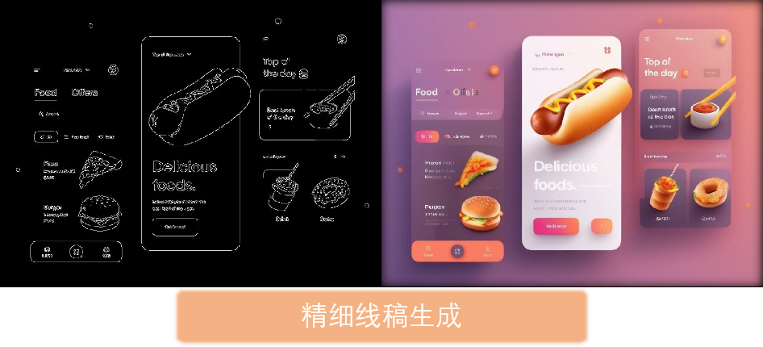
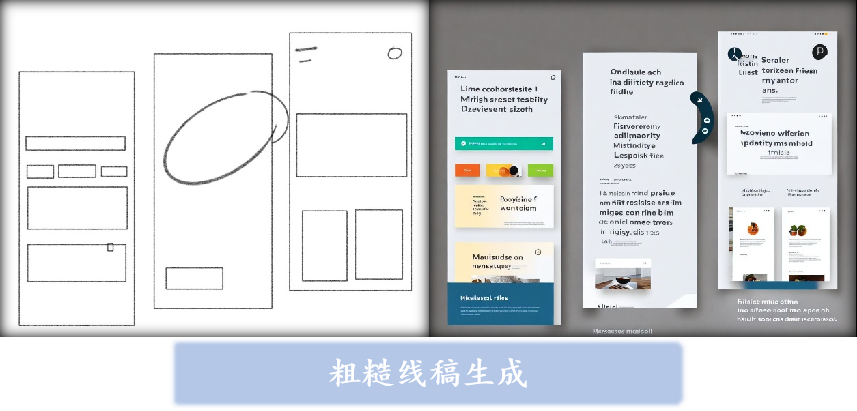
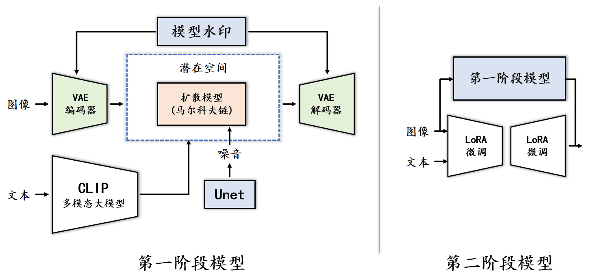
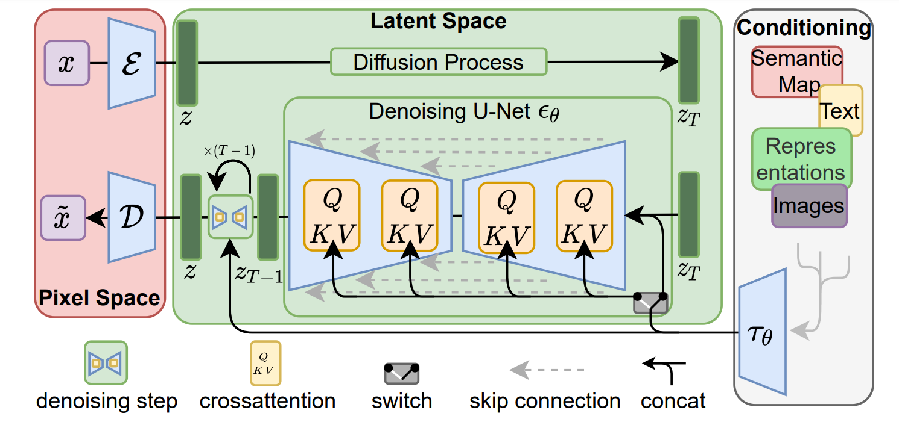
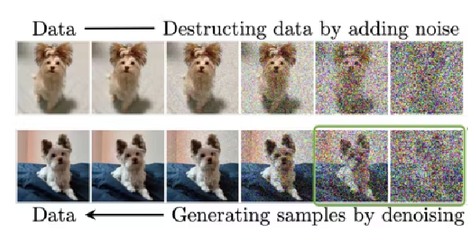
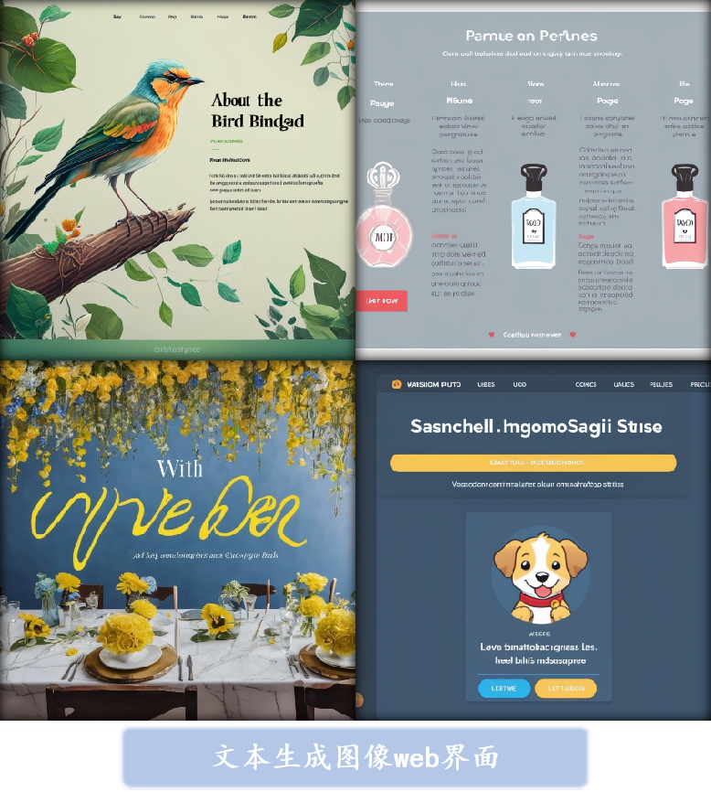
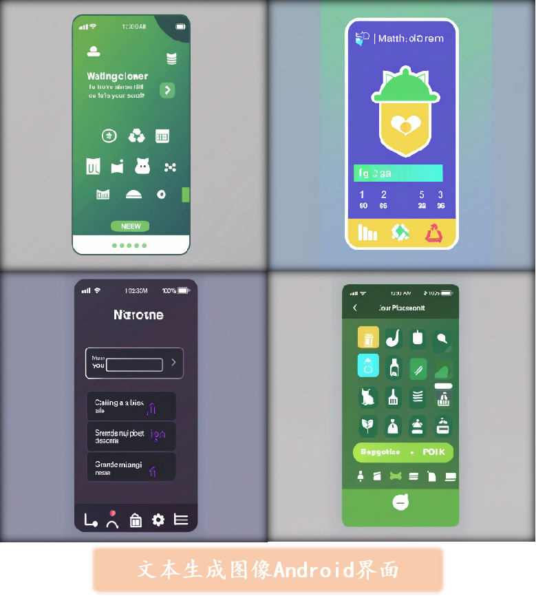

Introduction
In the rapidly evolving digital era, user interface (UI) design has become increasingly crucial, not only for enhancing user experience but also for boosting the market competitiveness of software products. Traditional manual design methods, however, are often too slow and costly to meet the demands of rapid product iteration and large-scale applications. The complexity and diversity of UI design types make the process time-consuming and expensive, with varied levels of design quality leading to inconsistent outcomes. As AI technology advances, existing image generation models have made significant strides but remain insufficient for UI-specific tasks, often lacking the ability to understand specialized vocabulary and deliver high-quality, relevant images.
The Diff-UI project was conceived to address these challenges by creating a diffusion model-based UI image generation system. This system is designed to automate and accelerate the UI design process, reducing the reliance on manual efforts while ensuring high-quality outputs. By leveraging advancements in AI, particularly diffusion models, Diff-UI can generate diverse and complex UI images efficiently, catering to a wide range of design needs across various industries. The necessity of this project is underscored by the growing significance of UI design in the digital marketplace. The global UI design market was valued at $1.596 billion in 2021 and is projected to grow significantly in the coming years, highlighting the critical role of effective UI design in driving business success. Traditional design methods are increasingly unable to keep pace with this demand, leading to higher costs and slower turnaround times, which can hinder companies' ability to remain competitive.
Diff-UI introduces several innovative features that set it apart from existing models:
- Custom Multi-functional Dataset: Diff-UI utilizes a unique, self-created UI dataset for training, making it one of the first non-position-specific text-to-image UI datasets available. This dataset includes a wide range of UI styles and scenarios, providing the model with extensive training data to enhance its generalization capabilities.
- Multi-mode UI Image Generation: The project supports various modes of image generation, including text-to-image, image-to-image, and condition-based image generation. This flexibility allows users to generate UI images tailored to specific needs, enhancing the model's applicability across different design contexts.
- Text-Guided Large Model Integration: By integrating large models that use text inputs to guide image generation and editing, Diff-UI allows users to achieve complex image manipulations without requiring specialized design knowledge. This feature democratizes UI design, making it accessible to non-experts.
- High-resolution Image Rendering: Diff-UI excels in generating high-resolution images quickly, thanks to optimized algorithms and model structures. This capability significantly reduces the time required to produce high-quality UI designs, lowering the overall design cost and time.
- Watermarked Image Generation: To protect the intellectual property of the generated images, Diff-UI incorporates watermarking techniques, allowing for accurate tracking and prevention of unauthorized use of the images.
- User-friendly Platform: The project includes a front-end platform that integrates Diff-UI's image generation capabilities, providing a simple and intuitive interface for users. This platform is designed to be easy to use, even for those without technical expertise, lowering the barriers to effective UI design.
Detailed Information

The Diff-UI project introduces a powerful UI image generation system based on diffusion models, specifically designed to automate and optimize the UI design process. The model's implementation is broken down into several key modules, each contributing to the system's overall functionality and performance.
The model's implementation is divided into the following modules:
- VAE - Latent Space Encoding: The Variational Autoencoder (VAE) module is responsible for mapping input images into a latent space, where the diffusion process occurs. The encoder reduces the image into a lower-dimensional latent space, significantly reducing computational complexity. After the diffusion process, the decoder reconstructs the image from the latent space, maintaining high quality while optimizing performance.
- CLIP - Text-Controlled Image Generation: The CLIP model is utilized to encode textual descriptions into embeddings that guide the image generation process. By embedding text alongside images, the model allows users to generate images that closely match the provided textual descriptions, making the UI design process more interactive and customizable.
- U-Net Architecture: The U-Net serves as the backbone of the diffusion model, handling the image transformation processes. It efficiently integrates features at multiple scales through its skip connections, ensuring that both local and global features are preserved throughout the image generation process.
- DDIM - Sampling Optimization: The Denoising Diffusion Implicit Model (DDIM) is employed to optimize the sampling process, reducing the number of required steps for image generation. This enhances the model's efficiency, enabling faster image generation without compromising quality.
- LoRA - Fine-Tuning: Low-Rank Adaptation (LoRA) is used to fine-tune the model for specific downstream tasks with minimal computational cost. This allows for flexible and efficient adaptation of the model to various UI design scenarios, ensuring that it meets diverse user needs.
- ControlNet Module: ControlNet introduces an additional control mechanism for generating UI elements based on specific conditions, such as predefined layouts or design constraints. This module enhances the model's ability to generate context-aware and highly relevant UI components.
- Text Masking and Watermarking: To address the issue of generating meaningless text in UI images, a text masking technique is applied during preprocessing. Additionally, generated images are embedded with watermarks to protect intellectual property and prevent unauthorized use.


Project Achievements


The Diff-UI project has achieved significant milestones in the field of UI image generation, leveraging the power of diffusion models to revolutionize how UI designs are created. The following key outcomes highlight the success and impact of this innovative project:
- Creation of a High-Quality UI Image Generation Model: The project successfully developed a diffusion model specifically tailored for UI design. This model is capable of generating high-resolution UI images with precise control over layout and style, providing designers with a powerful tool to streamline the design process.
- Innovative Text-to-Image and Image-to-Image Capabilities: Diff-UI introduces advanced functionalities that allow users to generate UI images from text descriptions or modify existing images based on new inputs. This flexibility enhances the creative process, making it easier to achieve specific design goals with minimal effort.
- Optimization for Efficiency and Scalability: Through the use of LoRA fine-tuning and DDIM sampling techniques, the model is optimized for efficiency, allowing it to generate images quickly without sacrificing quality. This scalability ensures that the model can be deployed across a wide range of applications, from small projects to large-scale enterprise solutions.
- Deployment of a User-Friendly Platform: The project also includes the development of a front-end platform that integrates the model's capabilities into a user-friendly interface. This platform allows designers and non-experts alike to easily create and customize UI designs, democratizing access to advanced design tools.
In conclusion, the Diff-UI project represents a major advancement in automated UI design, combining cutting-edge AI techniques with practical tools that cater to the needs of modern designers. Its achievements not only improve the efficiency and quality of UI design but also open new possibilities for creativity and innovation in the field.